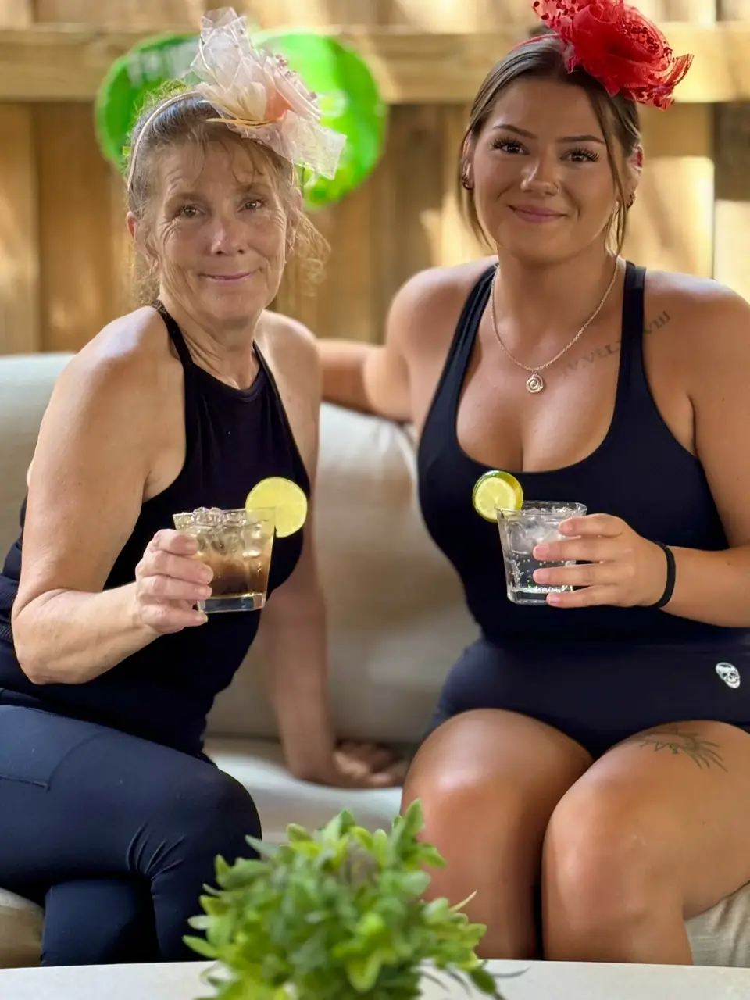
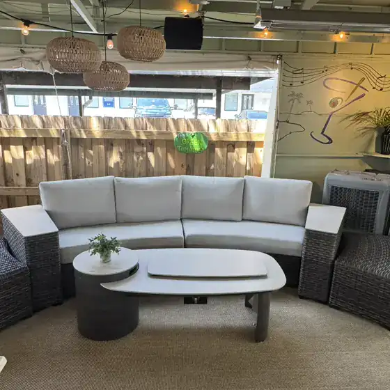
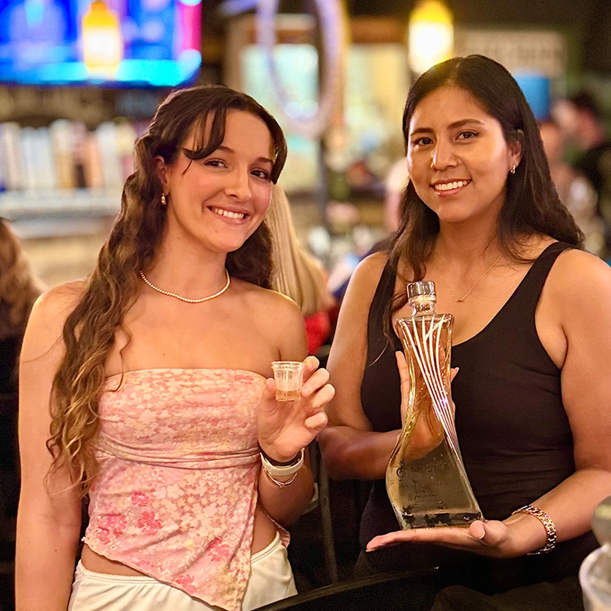

Monday
Martini Monday & Taco NightHalf-off martinis and 2-for-$6 tacos, 4 PM–close

Martini MondayHalf off, every week, 4 PM to close
Who's on the patio stage this weekend
Henry's milkshakes, still on the menu since the drive-in days
Safety Harbor's hometown grill and bar: real good food, 18 taps and local music under the open air.
For more than 35 years this corner was Frostee Harbor, Jane and Henry Fox's drive-in ice cream stand, with a short menu of burgers, fries and Henry's famous milkshakes. Folks still stop by to share stories of coming here back in the day.
Dawn first bought the place in 1995. She bought it again in 2000, this time with her husband Patrick, and together they built today's Whistle Stop Grill & Bar.
The take-out window became more than 100 seats, a full bar and 18 taps of beer, with fresh cocktails on an open-air patio. The milkshakes stayed.
“Love the hometown atmosphere! Whistle Stop is one of our favorites!”

Half-off martinis and 2-for-$6 tacos, 4 PM–close
6:30–9:30 PM, happy hour till close
From 6 PM, happy hour till close
3rd and 4th Thursdays of the month
Local artists, 6:30–9:30 PM
Local artists, 6:30–9:30 PM
$5 mimosas and Bloody Marys
4–7 PM, ask about today's specials


